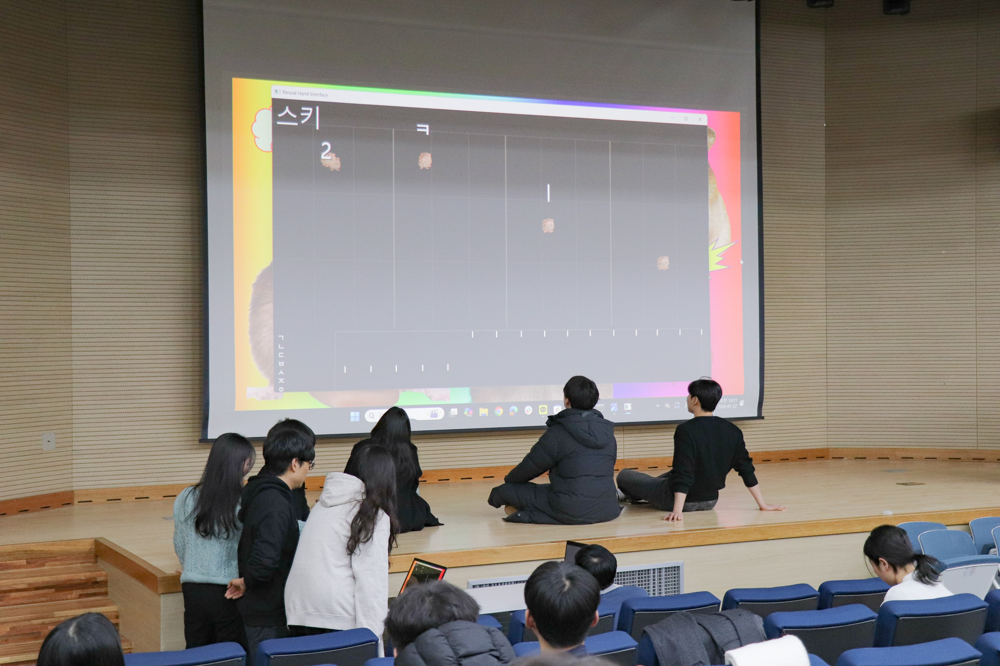
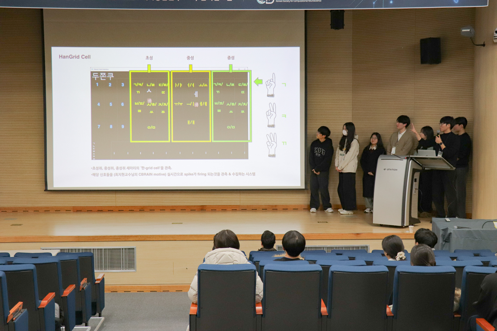
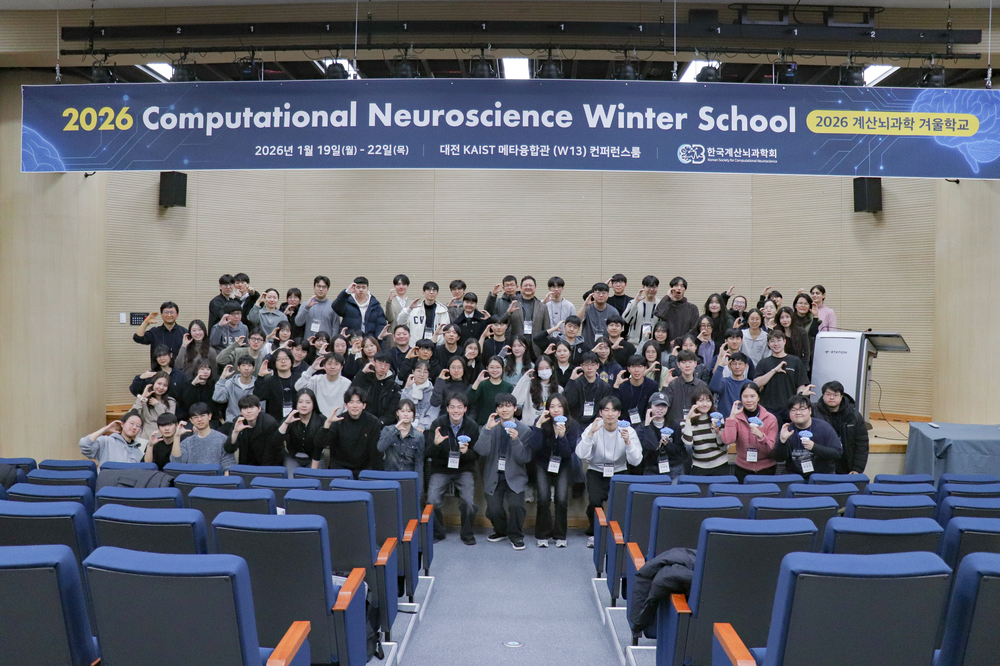
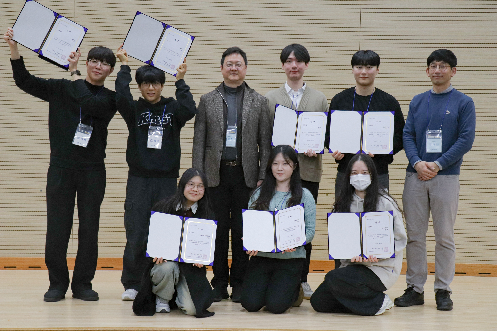

Winter School on Computational Neuroscience
Korean Society for Computational Neuroscience (KSCN) · 2026
A three-day, two-night winter school centered on the theory, modeling, and analytical methods of computational neuroscience, combining invited talks with team-based project work.
A real-time gesture-to-language game agent inspired by Hangeul composition and spatial representation, developed at the 2026 Winter School on Computational Neuroscience.
Our challenge was to develop a “CBrain Speed Game Agent” that could transform nonverbal gestures into meaningful signals in real time. Some team members communicated through gestures captured by a laptop webcam, while the remaining members had to identify target words using only the transformed signals projected onto a screen. Teams were evaluated based on both accuracy and speed.
The key constraint was that the original webcam feed could not be shown directly. Each team therefore had to design its own mechanism for filtering and transforming physical gestures into indirect visual signals before transmitting them to the receivers.


Our team developed Han-Grid Cell, a rule-based game agent that converted gestures into Korean characters through a real-time webcam recognition pipeline.
The system drew on two ideas: the spatial structure of the Korean Cheonjiin (천지인) keyboard layout and a playful concept inspired by grid cells, which we had learned about during the winter school. We imagined a virtual “rat” navigating a spatial character grid toward particular Korean letters, turning spatial gestures into language-related signals.
Rather than transmitting gestures directly, the system mapped them onto components of Hangeul. Over the course of the competition, we iteratively redesigned this interaction through two substantially different versions.
The first version used two signal senders: one responsible for consonants and the other for vowels. After memorizing the Cheonjiin layout, each sender selected characters using a predefined set of hand gestures.
Because senders were not allowed to see their own webcam image directly, we displayed only a hand-skeleton representation as indirect visual feedback. The right hand was used to point to a character location, while a left-hand fist confirmed the selection and displayed the corresponding character as output.
This version achieved high accuracy and placed our team near the top during the intermediate evaluation, allowing us to advance to the next stage. However, it also revealed a major bottleneck: the interaction was too sequential and gesture-intensive. Pointing, confirming, and correcting an input each required a different gesture, making the protocol difficult to memorize and limiting communication speed.
Based on the limitations of Version 1, we redesigned the system for the next stage. Instead of simply optimizing individual gestures, we changed the interaction architecture itself by taking advantage of the compositional structure of Hangeul.
Version 2 divided the interaction into four parallel roles. Three members were assigned to the initial consonant (choseong), medial vowel (jungseong), and final consonant (jongseong), while a fourth member served as a coordinator who monitored and mediated the overall input process.
The display was vertically divided into four regions corresponding to these roles, allowing multiple components of a Hangeul syllable to be communicated in parallel. The coordinator needed to remember only two signals: complete and reset.
This redesign reduced the complexity of the gesture vocabulary and replaced the largely sequential workflow of Version 1 with a more parallel communication process, enabling the team to transmit information more efficiently.
An important part of the final system was not the agent alone, but how the receiving team members interpreted its partial and occasionally imperfect outputs.
Because Hangeul syllables have a highly structured composition, receivers could often anticipate a word before every component had been fully transmitted. Even when a character was incorrectly entered, the intended word could sometimes be recovered from the surrounding linguistic context.
The final performance therefore emerged from a combination of machine-mediated signal transformation, parallel human input, and context-based human inference. Rather than replacing human interpretation, the system provided structured cues that team members could rapidly integrate and complete.


Among 10 teams, our team advanced through the preliminary round, semifinals, and finals, ultimately winning 1st Place and the Grand Prize based on combined accuracy and problem-solving speed.
The project gave me firsthand experience with rapid prototyping and iterative system design. Our first solution was accurate but inefficient; identifying that bottleneck and redesigning the interaction around parallel processing resulted in a substantially more effective second version.
More broadly, the project showed me how concepts encountered in computational neuroscience and cognitive science can serve as inspiration for interactive system design. It also highlighted how effective human–agent systems can emerge from the interaction between machine-transformed information and human perception, inference, and communication.